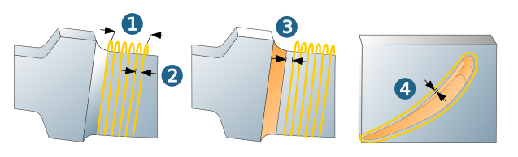
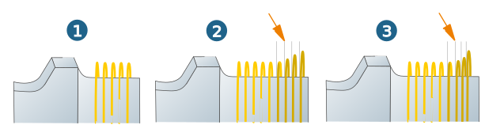
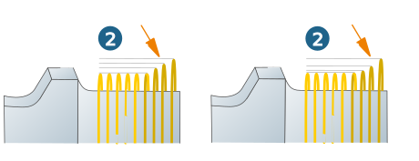

Parameters
Horizontal stepover
Material width (1): Machining area over all milling paths in the lateral (+X or –X) direction. If the total infeed (Material width) is less than/equal to the side stepover, then only one cut is calculated in this machining direction.
Lateral infeed (2): Distance between two milling paths on the surface to be machined. The number of lateral machining steps to be carried out is determined depending on the total lateral infeed.
Allowances
Side allowance: (3): Allowance for the side surfaces.
Blade allowance (5): Allowance for the blade surfaces.
|  |
Technology: final paths
Blades may require step-by-step blade machining. To do this, use the technology of final paths.
Advantageous when
-
when working from the platform in the direction of the blade,
-
an oversized overlapping area is to be machined (at least partially) with a different strategy,
-
the blades must be stabilised to prevent deformation.
For a smooth overlap, specify the number of additional Overlapping paths and the End distance. The lateral infeed is continued in the same way as when fading in. The paths on the surface must therefore be finished earlier. Use the parameter Add. side clearance for this. Calculate this parameter as follows:
at least the number of Overlaping paths multiplied by the Side stepover.
Technology: Smooth overlap
Smooth entry: If this option is enabled, use Number of paths to specify how many times the tool travels around the blade to approach the blade continuously via total radial and lateral infeed.
In addition to the Total radial infeed, you can define a Total lateral infeed for the starting area. The lateral infeed can be defined independently of the lateral infeed over the blade. The infeed can be optimally controlled in all areas, depending on the amount of material that needs to be removed.
Total lateral infeed: Starting from the total lateral infeed, the tool approaches the blade surfaces based on the number of paths.
Smooth entry: Option is disabled (1).
Constant (2): The approach is constant (linear).
Circular (3): The approach is circular.
|  |
Total radial infeed: Starting from the total radial infeed, the tool approaches the blade surface based on the number of paths.
Constant (1): The approach is constant (linear).
Circular (2): The approach is circular.
|  |
Technology: Edge behavior
A separate Feedrate or Offset can be defined in the edge area. Depending on the function selected under → , either independent values can be defined for each edge or a common value can be defined for both edges.
For the → option, different offset values and feedrates can be defined in each case. To do this, use the parameters Leading edge feedrate and Trailing edge feedrate or Leading edge offset and Trailing edge offset. An additional offset is particularly useful, for example, to protect small edges in the event of subsequent barrel finishing.
For the options → and → use Offset edge and Feedrate to define a uniform allowance or a uniform feedrate for both edges respectively.
Feedrate control
Tip
Feedrate control: Activate to reduce the feedrate in the edge area depending on the edge curvature, for example, to limit the maximum speed of the turning axis. The preset feedrate then refers to a path that is higher than the center path of the cutter by the value defined in Feedrate reference distance. The output feedrate is multiplied by a factor resulting from the ratio of the distances travelled in both paths.
Explanatory note:
(1) Distance toolpath blade surface (corresponds to tool diameter), (2) Toolpath, (3) Reference path, (4) Reference distance = distance toolpath to reference path, (5) (6) Length path unit. The output feedrate is calculated as follows:
= Leading edge feedrate and Trailing edge feedrate